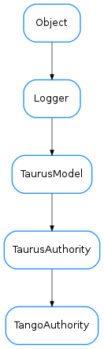

TangoAuthority¶

-
class
TangoAuthority(host=None, port=None, parent=None)[source]¶ Bases:
taurus.core.taurusauthority.TaurusAuthority-
deviceTree()[source]¶ Returns a tree container with all devices in three levels : domain, family and member
Return type: TangoDevTreeReturns: a tree containning all devices
-
getAliasNames()[source]¶ Returns a list of registered tango device alias
Return type: sequence<str>Returns: a sequence with all registered tango device alias
-
getClassNames()[source]¶ Returns a list of registered tango device classes
Return type: sequence<str>Returns: a sequence with all registered tango device classes
-
getDescription(*args, **kwargs)¶ Deprecated since version 4.0: Use .description instead
-
getDevice(name)[source]¶ Reimplemented from
TaurusDeviceto use cache and returntaurus.core.tango.TangoDevInfoobjects with information about the given device nameParameters: name ( str) – the device nameReturn type: TangoDevInfoReturns: information about the tango device
-
getDeviceNames()[source]¶ Returns a list of registered tango device names
Return type: sequence<str>Returns: a sequence with all registered tango device names
-
getDisplayValue(*args, **kwargs)¶ Deprecated since version 4.0: Use getFullName instead
-
getServerNames()[source]¶ Returns a list of registered tango device servers in format<name>/<instance>
Return type: sequence<str>Returns: a sequence with all registered tango device servers
-
getValueObj(*args, **kwargs)¶ Deprecated since version 4.0: Use getTangoDB instead
-